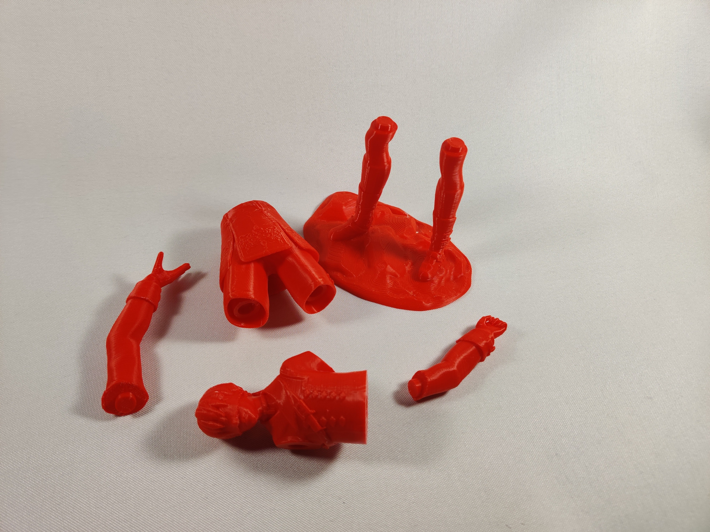

YorHa No. 9 Type S
—「0X://Explanation」
A poorly painted 9s, i should use a different color base in the future, at least i coated it gray.
Beginnings
my first real attempt painting with brushes and i kinda totally didnt follow sanding instructions, sooooooo it doesnt look good. 9s is one of the best characters from my fav game, aaaa ♡
Hardware
things in this project:
> acrylic paints
> spray filler
> printer filament (red)
> brushes
Process
first i printed this 9s model > found here <

i sanded it and then sprayed it with filler


sooo sanding instructions i got afterwords tell me to use way higher grit then i did the second round of sanding i did

sprayed it again, i think i should use primer, more sanding and not filler, ill give it another try with 2b soon.

all gray, and still full of print lines ahh ;;
then i just used the paints and brushes i have, and my hands are very shaky and i had some problems with too wet paint so it didnt turn out the best but here are the pictures:


its alot bigger than my other figures

┈ ren ♡